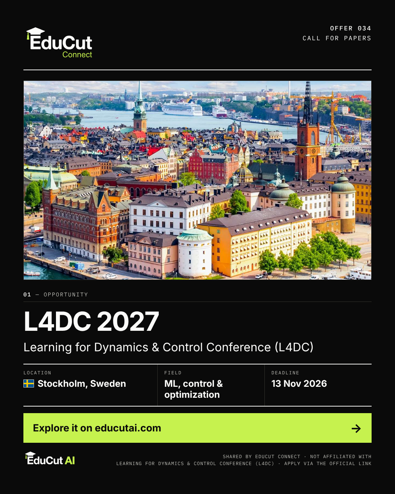

19:15
13 Nov 2026

Image file: 01_13Nov_19h15_Offer_034.png
🎓🇸🇪 Call for Papers at Learning for Dynamics and Control Conference L4DC 2027, Sweden! The Learning for Dynamics & Control Conference (L4DC) is inviting paper submissions for L4DC 2027, welcoming theoretical, applied and empirical research at the intersection of machine learning, control and optimization. The conference takes place June 16-18, 2027 in Stockholm, Sweden. 📍 Location: Stockholm, Sweden 🎓 Level: Researchers 🔬 Fields: Machine Learning, Control, Optimization 📅 Deadline: 13 November 2026 🔗 Explore the opportunity and apply: https://educutai.com/educut-connect/034-l4dc-2027/ Know a researcher working on machine learning and control who should submit to L4DC? Share this opportunity! #CallForPapers #L4DC #MachineLearning #ControlTheory #Sweden #EduCutConnect #EduCutAI
Image alt text
Card for L4DC 2027, a call for papers from the Learning for Dynamics & Control Conference (L4DC) in Stockholm, Sweden, with a paper submission deadline of 13 Nov 2026. The photo is an aerial view of the colourful old-town buildings of Gamla Stan and Riddarholmen in Stockholm, with the spire of Riddarholmen Church and the waterfront.